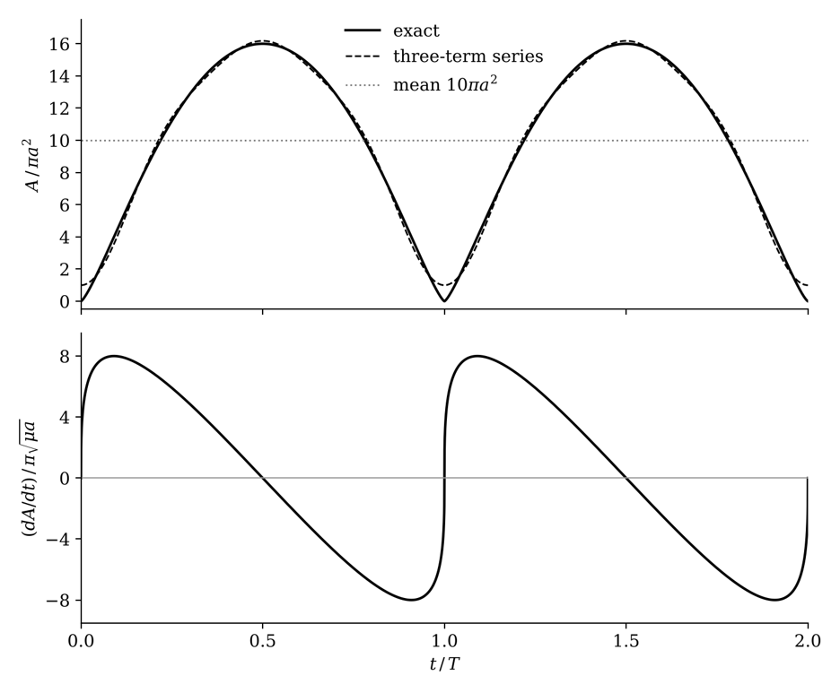
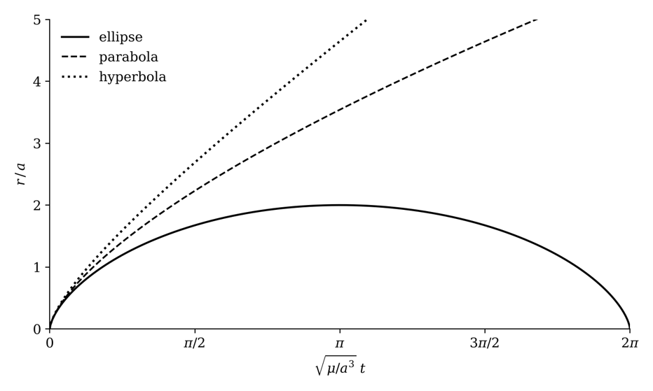
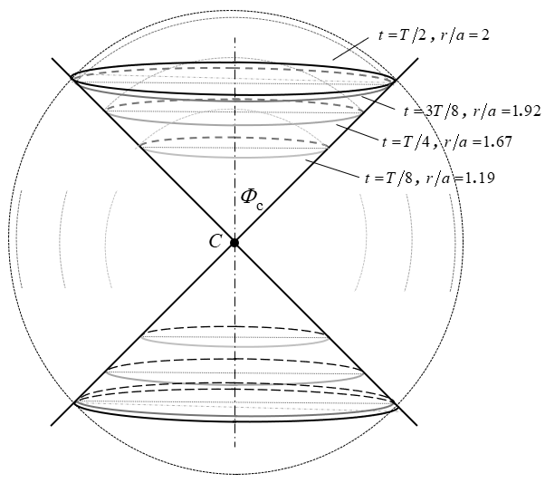

Rectilinear Trajectories
Rectilinear trajectory analysis and results
A rectilinear trajectory is the limit e = 1, p = 0 of each conic type. The angular momentum vanishes and the motion runs along a straight line through the attracting center. The Elliptical and Hyperbolic pages each close by showing that their time equations reduce to this case with no change in the integration, and Table C-1 collects its parameters. Only the sign of the energy separates the three rectilinear trajectories, so this is where the orbit types meet, and the natural place to compare them and to examine the smooth transition from one type to another, a topic that is largely absent from the literature.
Without angular momentum the trajectory is no longer confined to a plane, and the cone no longer constrains its direction. This page first follows the whole family of equal-energy radial trajectories launched in every direction at once, whose envelope is a sphere that expands and collapses once per period, and compares that motion across the three energies. It then returns to the conical frame, where the cone keeps its shape and scales with the sphere.
The Breathing Sphere
In the rectilinear ellipse the angular momentum vanishes, so h = p = 0 and the trajectory lies in every plane that contains its line. No direction is preferred. Consider, then, the whole family of equal-energy radial trajectories launched from the center in every direction at the same instant. At any later time every member sits at the same radius, so their envelope is a sphere. That sphere expands, stops, and collapses back to the center once per orbital period. It is a genuinely three-dimensional periodic motion, and among the rectilinear cases it belongs to the ellipse alone.
Radius and time
With e = 1 the radius and Kepler's equation become
where E is the eccentric anomaly. Together, Eqs. R-1 and R-2 describe a cycloid: a circle of radius a rolling along the time axis, with E the angle through which it has turned. Each arch touches r = 0 at a collision and reaches r = 2a at E = π.
Here a collision means r = 0, with the attracting body idealized as a point mass. This point is a singularity: the potential −μ/r and the radial speed are both unbounded there, and the equations of motion do not hold. The time to reach it from any finite radius is nevertheless finite, since near the center √(μ/a3) t ≈ E3/6. We take t = 0 at r = 0, which is periapsis passage for e = 1, defined as the limit of t as r → 0. The motion is continued past the singularity by reversal, as the regularized solution and the limit e → 1 of an ordinary ellipse both require, so Eqs. R-1 and R-2 describe a periodic motion.
Differentiating Eq. R-2 gives
The product rĖ is a constant, √(μ/a), the speed on a circle of radius a. The same step applied to the general Kepler equation, √(μ/a3) t = E − e sin E, gives Ė(1 − e cos E) = √(μ/a3), so Eq. R-3 holds for every ellipse, not only e = 1. It makes E a regularized clock. E advances quickly near the center, where r is small, and slowly near apoapsis, so the collision is smooth in E even though the radial speed is unbounded there in t.
Area and area rate
The surface area of the sphere follows directly from Eq. R-1:
Because the radius is a squared sine, A never goes negative and has a single hump per period. It rises from zero at E = 0 to 16πa2 at E = π and returns to zero at E = 2π, one cycle per period T = 2π√(a3/μ).
For the rate of change, dA/dt = 8πrṙ. With ṙ = a sin E Ė, Eq. R-3 lets the factor of r cancel:
The area rate is a pure sine of E. It stays finite through the collision, where ṙ itself is singular. For a general ellipse Eq. R-5 reads rṙ = e√(μa) sin E, so the rectilinear result is simply the case e = 1. The constant √(μa) is the angular momentum per unit mass of the circular orbit of radius a, just as √(μ/a) is its speed.
Area as an explicit function of time
Kepler's equation cannot be inverted in elementary functions, so Eqs. R-2 and R-4 give A(t) only parametrically. An exact explicit form comes from the classical Bessel expansion of r2/a2 in the mean anomaly, the standard way of writing the solution of Kepler's equation as a series in time, evaluated at e = 1:
where Jk is the Bessel function of the first kind. Only cosines appear in Eq. R-7 because A(t) is symmetric about each collision and about apoapsis. The constant term gives the time-averaged area,
compared with the peak of 16πa2. The sphere spends more of each period large than small, since it moves slowly near apoapsis.

Figure R-1 shows two periods. In the upper panel the solid curve is the exact area from Eqs. R-2 and R-4, the dotted line is the mean of Eq. R-9, and the dashed curve keeps only the first three terms of Eq. R-7. The three-term curve follows the exact one closely everywhere except at collision, where it rounds off the cusp. The lower panel shows Eq. R-6. Its extremes of ±8π√(μa) occur at E = π/2, which by Eq. R-2 is t/T ≈ 0.09, well before a quarter period.
Gauss's law for the breathing sphere
Every point on the sphere has the same radial acceleration, r̈ = −μ/r2, so the sphere is a Gaussian surface that moves with the motion. Multiplying by the area A = 4πr2 gives
which is Gauss's law for gravity: the flux of the field through the sphere equals −4πμ. The radius cancels, so the flux is the same at every instant of the cycle, and the result holds for all three energies. The factor 4π is the full solid angle. Each element of solid angle dΩ in the isotropic family contributes r2r̈ dΩ = −μ dΩ, independent of time, and summing over every direction gives Eq. R-10.
The same constant governs the second derivative of the area. Differentiating Eq. R-6 and using Eq. R-3 for Ė gives
At apoapsis, E = π and rÄ = −8πμ, twice the flux. Near collision cos E approaches 1 while r approaches zero, so Ä grows without bound, consistent with the vertical tangent in the lower panel of Fig. R-1. The leading coefficient of Eq. R-6 can be written the same way, 8π√(μa) = 2(4πμ)/√(μ/a).
Collision behavior and the other energies
Near collision, E is small and Eqs. R-1 and R-2 give r ≈ aE2/2 and √(μ/a3) t ≈ E3/6. Then r ∝ t2/3, A ∝ t4/3, and dA/dt ∝ t1/3. The area rate therefore passes through zero with a vertical tangent at each collision, as the lower panel of Fig. R-1 shows. This is also why Eq. R-8 converges more slowly than Eq. R-7: since Jk(k) falls off as k−1/3, the terms of Eq. R-8 decrease as k−4/3 and those of Eq. R-7 as k−7/3.
The other two rectilinear cases do not return. With zero energy the radius grows as r = (9μt2/2)1/3, and with positive energy r = a(sec η − 1) with √(μ/a3) t = tan η − ln(sec η + tan η), the rectilinear form of the time equation on the Hyperbolic page. In both, the sphere expands without limit. The same three solutions describe the closed, critical, and open universes of Newtonian cosmology (Milne and McCrea, 1934)1, where each shell of a uniform sphere follows a radial Kepler trajectory, and the negative-energy case is the spherical collapse model used for galaxy halos (Gunn and Gott, 1972)2.
Comparing the three energies
Equating r and t for the rectilinear parabola gives (√2/3)r3/2 = √μ t. The parabola has no length scale of its own, so it can be normalized by the a of any ellipse or hyperbola. Dividing by a3/2 puts all three cases on common axes:
with the ellipse given by Eqs. R-1 and R-2. The vis-viva equation shows why the three agree near the center. It reads v2 = 2μ/r − μ/a for the ellipse, 2μ/r for the parabola, and 2μ/r + μ/a for the hyperbola. As r becomes small, the 2μ/r term dominates and the energy term no longer matters, so both the ellipse and the hyperbola tend toward the parabolic motion. The series confirm this. For small E, Eqs. R-1 and R-2 give r/a ≈ E2/2 and √(μ/a3) t ≈ E3/6, and eliminating E returns Eq. R-12 exactly. Eq. R-13 does the same for small η, where sec η − 1 ≈ η2/2 and tan η − ln(sec η + tan η) ≈ η3/6. Eq. R-12 is therefore the leading term of both the elliptic and hyperbolic solutions.
Eq. R-3 has a hyperbolic partner. Differentiating the time equation of Eq. R-13 gives r η̇ sec η = √(μ/a). For the rectilinear hyperbola the apex distance is R = r + a, so sec η = R/a and
The ellipse holds rĖ at √(μ/a), the speed on a circle of radius a, and the hyperbola holds rRη̇ at √(μa), the angular momentum on that circle. For a general hyperbola the same steps, with cos η = ae/R, give rRη̇ = e√(μa).

Figure R-2 plots r/a against √(μ/a3) t for the three cases. All three leave the center along the same curve. Beyond that, the vis-viva ordering of speeds at a given radius keeps them ordered in time: the hyperbola is always farthest out, the ellipse closest in, and the parabola between them. For example, r = 2a is reached at √(μ/a3) t = 1.066 on the hyperbola, 4/3 on the parabola, and π on the ellipse, where it is apoapsis. Because the parabola is scale-free, it is a single reference curve, and every ellipse and hyperbola with the same a lie on either side of it. Gauss's law, Eq. R-10, holds for all three, but only the elliptic sphere returns.
Squaring the parabolic relation gives r3 = 9μt2/2, with t measured from the launch at r = 0, the periapsis passage, so the constant of integration is zero. Since μ has units of length cubed over time squared, μt2 is a volume, and the relation has the structure of Kepler's third law with r and t in place of a and T. Multiplying by 4π/3 gives the volume of the parabolic sphere,
The volume grows exactly as t2, in the same form as free fall, with a constant volumetric acceleration of 12πμ. For all three energies, differentiating V twice and using the rectilinear vis-viva equation gives
with the upper sign for the ellipse, the lower sign for the hyperbola, and a → ∞ for the parabola. At r = 0 both the ellipse and the hyperbola take the parabolic value 12πμ. At the elliptic apoapsis, r = 2a and Eq. R-16 gives −4πμ, which is the flux of Eq. R-10.
The Breathing Cone
With p = 0 the Bridge Relation R2 = r2 + ap reduces to R = r, so the bounding sphere of the conic frame is the breathing sphere itself. The cone half angle Φc stays fixed while r changes, and the whole frame scales with r without changing shape. Every length in it goes as r, every area as r2, and every volume as r3, so all of them follow the cycloidal motion of Eqs. R-1 and R-2.
Circumference
A particle launched along a generator of the cone stays on that generator, and every particle has the same r(t). The particles launched together on either nappe therefore always lie on a circle, at height ±r cos Φc on the cone axis, with radius R′ = r sin Φc. This circle is the locus of all the rectilinear trajectories that begin simultaneously. Its circumference, per nappe, is
C′ is a constant fraction, sin Φc, of the sphere's great circle. As a function of time it is the cycloid of Eqs. R-1 and R-2, scaled by 2π sin Φc.

Figure R-3 shows the 45° frame from the side at 25, 50, 75, and 100 percent of the outbound half-period, t = T/8, T/4, 3T/8, and T/2. Each instant has its own gray level. The dotted circle is the breathing sphere, the solid lines are the generators out to radius r, and each ring C′ is drawn as a flattened ellipse. All the frames share the apex C and the half angle Φc, so they are nested similar cones. Solving Eq. R-2 at these times gives r/a = 1.19, 1.67, 1.92, and 2. Equal steps in time give unequal steps in radius: the ring covers more than half its full excursion in the first eighth of the period, and the last two rings nearly coincide. This is the slow motion near apoapsis that weights the average of Eq. R-9. On the inbound half the rings retrace the same positions in reverse order.
Because C′ = kr with the constant k = 2π sin Φc, its acceleration is k times the radial acceleration, and substituting r = C′/k gives
The circumference obeys its own rectilinear Kepler problem, with gravitational parameter k3μ and semi-major axis ka. Its period, 2π√((ka)3/(k3μ)), is the same as that of the sphere, which is why the ring breathes in step with it. The ring also lies on the sphere, an equipotential surface, so the potential summed around it, ∮(−μ/r) dℓ = −μC′/r = −2πμ sin Φc, is constant for all time.
Lateral area
Each nappe, from the apex C out to the sphere, has slant height r and base radius R′. The lateral area of both nappes is
The cone area is the sphere area of Eq. R-4 scaled by the constant ½ sin Φc, which is √2/4 ≈ 0.354 for the 45° cone. Every result for A, including the series of Eqs. R-7 and R-8, carries over to Ac with the same factor.
Rates at collision
From Eq. R-5, ṙ = √(μa) sin E/r = √(μ/a) cot(E/2). The two rates are then
Eq. R-20 is singular at collision, like ṙ, so the circumference carries the cusp of the cycloid. In Eq. R-21 the factors of (1 − cos E) cancel as they did in Eq. R-6, and the rate stays finite. The circumference carries the cusp and the area smooths it out, the same split seen between ṙ and dA/dt for the sphere.
Time averages
The constant terms of the Bessel expansions at e = 1 give ⟨r⟩ = 3a/2 and ⟨r2⟩ = 5a2/2, the second being the source of Eq. R-9. The averages per nappe for the circumference and for both nappes for the area are
With their constant factors removed, C′ and Ac reduce to r/a and (r/a)2, curves already shown in Figs. R-2 and R-1, so they need no figure of their own. The only new behavior is in the rates. Scaled the same way, Eq. R-20 becomes cot(E/2), unbounded at each collision, while Eq. R-21 becomes 2 sin E, with the shape of the lower panel of Fig. R-1.
Gauss's law for the cone
The gravity field is radial, and each cone wall is made of radial lines, so no flux crosses the walls. Close each nappe with the spherical cap of radius r. The normal component of the field on the cap is the full radial acceleration, the same at every point, and the cap area is 2πr2(1 − cos Φc). Per nappe, then,
This has the same form as Eq. R-10 and is constant through the cycle. The factor 2π(1 − cos Φc) is the solid angle of the nappe, so the two caps together carry the fraction 1 − cos Φc of the sphere's flux, about 0.293 for the 45° cone. Every field line through a cap also passes through its flat base, so the base carries the same flux. The enclosed volume of each nappe with its cap, (2/3)πr3(1 − cos Φc), likewise takes the same fraction of Eq. R-15 near collision.
The lateral area gives a companion relation. Multiplying Eq. R-19 by r̈ = −μ/r2,
which is Eq. R-10 scaled by the area ratio ½ sin Φc. It is also constant, but it is not a flux, since none crosses the walls. The same holds for the base circle. Its radius R′ is the projection of r onto the base plane, so
and the base area times this acceleration is πR′2R̈′ = −πμ sin3Φc per nappe. Because R̈′ lies in the base plane rather than along its normal, this constant comes from the projection, not from Gauss's law. The flux through the base is the one given by Eq. R-23.
Where the self-similarity stops
All of this depends on p = 0. When p > 0, R differs from r, the trajectories no longer run along generators, and the circle on the cone is no longer a single moving ring of particles. Extending the breathing frame to p > 0 remains an open question.
1 E. A. Milne, "A Newtonian expanding universe," Quarterly Journal of Mathematics 5, 64–72 (1934); W. H. McCrea and E. A. Milne, "Newtonian universes and the curvature of space," Quarterly Journal of Mathematics 5, 73–80 (1934). ↩
2 J. E. Gunn and J. R. Gott, "On the infall of matter into clusters of galaxies and some effects on their evolution," Astrophysical Journal 176, 1–19 (1972). ↩